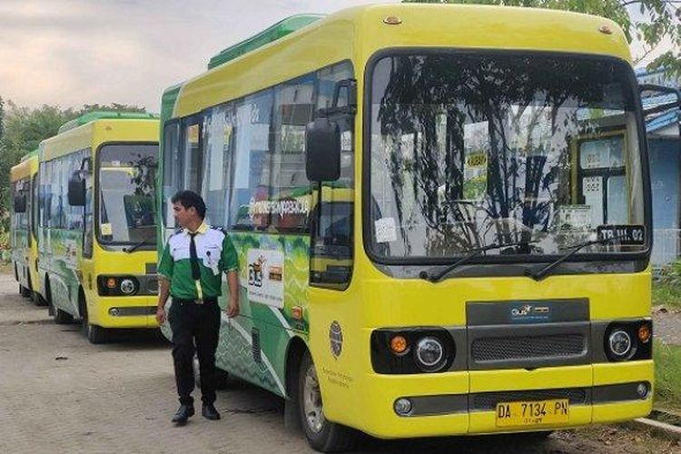

Teman Bus Banjarmasin atau Trans Banjarbakula adalah moda transportasi publik yang menjadi bagian dari program Teman Bus gagasan Kementerian Perhubungan Republik Indonesia melalui Direktorat Jenderal Perhubungan Darat.
Sesuai namanya, operasional layanan Teman Bus Banjarmasin meliputi wilayah Banjarmasin, Banjar, Banjarbaru, Barito Kuala dan Tanah Laut.
Bus Trans Banjarbakula diharapkan dapat mempermudah mobilisasi masyarakat di Kalimantan Selatan (Kalsel) karena sudah terkoneksi dengan Terminal Gambut Barakat KM 17 dan Terminal Induk KM 6.
Angkutan Bus Rapid Transit (BRT) ini menjadi penunjang mobilisasi masyarakat dengan jumlah armada yang akan beroperasi sebanyak 75 unit.
Armada bus sedang berkapasitas 40 penumpang dengan 20 tempat duduk dan bus besar yang berkapasitas 60 penumpang dengan 30 tempat duduk dengan masing-masing 1 area untuk prioritas.
Tarif Teman Bus Banjarmasin
Sementara per 31 Oktober 2022 nanti, penumpang Teman Bus Banjarmasin atau Trans Banjarbakula akan dikenakan tarif per satu kali naik.
Artinya jika dalam suatu perjalanan penumpang Teman Bus perlu berpindah koridor atau rute, maka mereka tdak akan terkena tarif lagi.
Tarif yang dikenakan untuk tiap penumpang Teman Bus Banjarmasin atau Trans Banjarbakula adalah Rp 4.300.
Lebih lanjut, penumpang Teman Bus hanya dapat melakukan pembayaran melalui metode cashless payment menggunakan kartu non tunai antara lain E-money dari Bank Mandiri, Brizzi dari Bank BRI, Tap Cash dari Bank BNI, dan Flazz dari Bank BCA.
Jam Operasional Teman Bus Banjarmasin
Jam operasional Trans Banjarbakula setiap hari adalah mulai dari pukul 05.00 hingga 21.00 WITA dengan rincian:
Koridor 1: keberangkatan pertama dari Terminal Gambut Barakat pukul 05.00 WITA dan keberangkatan terakhir pukul 20.00 WITA.
Koridor 2: keberangkatan pertama dari Terminal Gambut Barakat pukul 05.00 WITA dan keberangkatan terakhir pukul 20.00 WITA.
Koridor 3: keberangkatan pertama dari Terminal Induk KM 6 Barakat pukul 05.00 WITA dan keberangkatan terakhir pukul 19.00 WITA.

Blog Image Desc
"Sometimes it's good to miss a bus.
It might be the wrong bus."
Rute Teman Bus Banjarmasin
Rute Trans Banjarbakula Koridor 1: Terminal KM 17 - Simpang Empat Banjarbaru PP Terminal Gambut Barakat - Citra Graha A - Timbangan A - Carsurin - Masjid Al-Muhtadien - Air Nav - Bina Putra A - Masjid Hajjah Nuriyah - Minggu Raya - FK ULM - Simpang Empat Banjarbaru - UNLAM 1 - Kolam Renang Banjarbaru - Limousin - Arutmin - SDN Brimob - Bina Putra B - Masjid Al-Mukarramah - Golf - Polda Kalsel - Timbangan B - Citra Graha B -Terminal Gambut Barakat
Rute Trans Banjarbakula Koridor 2: Terminal KM 17 - Terminal Siring KM 0 Banjarmasin PP Terminal Gambut Barakat - Gambut A - Indogrosir - PT Delta A - Pasar Ahad - Terminal Induk KM 6 - Dharma Praja - IAIN Antasari - Polresta - Golden Tulip - Pasar Sudimampir - Taman Siring Kilometer 0 - RSUD Ulin - RS Bhayangkara - Jasa Raharja - G'Sign - Terminal Induk KM 6 - PT Delta B - Universitas N.U - Gambut B - Terminal Gambut Barakat
Rute Trans Banjarbakula Koridor 3: Terminal KM 6 - Universitas Muhammadiyah Banjarmasin PP Terminal Induk KM 6 - Universitas Sari Mulia A - Komplek Smanda A - Plaza Futsal A - Pom Simpang Empat - Banyu Anyar A - Dishub Capi A - UNISKA A - Kayu Tangi Permai A - Simpang Gusti A - RSUD Dr. H. Moch. Ansari Saleh A - Kebun Jeruk - Griya Permata A - Persada Raya 3 A - Masjid Jami Al-Mushallun - Olala A - Balai Latihan Masayarakat A - Universitas Muhammadiyah Banjarmasin - Balai Latihan Masayarakat B - Olala B - SDN Handil Bakti - Persada Raya 3 B - Griya Permata B - Terminal Handil Bakti - RSUD Dr. H. Moch. Ansari Saleh B - Simpang Gusti B - Kayu Tangi Permai B - UNISKA B - Dishub Capil B - Banyu Anyar B - Pasar Kesatrian - Plaza Futsal B - Komplek Smanda B - Universitas Sari Mulia B - Terminal Induk KM 6
Rute Trans Banjarbakula Koridor 4: Terminal KM 17 - Simpang 3 Bentok.